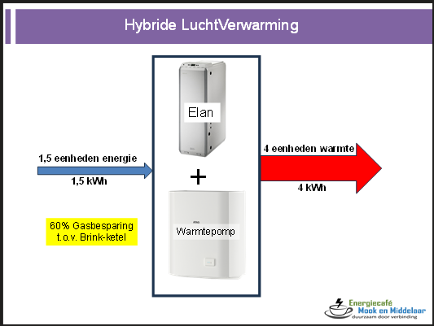

31 May, 2024
Het is goed om te begrijpen wat de echte essentie van een warmtepomp is en wat het verschil is tussen een volledige warmtepomp (zogenaamde full electric warmtepomp) en een hybride warmtepomp.
Het essentiële verschil is tussen uw huidige luchtverwarming en een luchtverwarming met een volledige warmtepomp, is schematisch weergegeven in onderstaande figuur.
Een hetelucht verwarmer (bijvoorbeeld een Allure of Elan) levert warme lucht en ventilatie van de lucht
Om 4 eenheden warmte op te wekken, heeft de Allure 4 eenheden energie (gas) nodig.
Een (full electric) warmtepomp doet precies hetzelfde als een Allure, verwarmt de lucht in huis en ventileert,
MAAR het grote verschil is dat een warmtepomp slechts 1 eenheid energie (elektriciteit) nodig heeft om 4 eenheden warmte op te wekken.
DUS een warmtepomp gaat 4 keer zo efficiënt met een de energie om als een Allure.
Oftewel: een Allure heeft een rendement van 100% en
Een luchtverwarming met warmtepomp heeft een rendement van 400%.
Afhankelijk van de uitvoering, kan een full electric warmtepomp ook de warmwatervoorziening verzorgen.
Een hybride warmtepomp is een combinatie van een kleine warmtepomp met de bestaande gas-gestookte luchtverwarmer.

Ieder van de apparaten doet dat deel waar het apparaat het beste presteert.
Het effect is dat we 1,5 eenheid energie (gas + elektriciteit) er in moeten stoppen om er 4 eenheden warmte uit te krijgen.
Dus een rendement van ruim 250%.
Welk apparaat doet nu wat:
- de warmtepomp doet de verwarming zolang het niet extreem koud is
- de luchtverwarming springt bij als er veel warmtevraag is, dus als het buiten heel koud is of als het huis snel opgewarmd moet worden.
Een hybride luchtverwarming kan in tegenstelling tot de Allure soms ook warm tapwater maken.
EnergieCafe Mook en Middelaar.